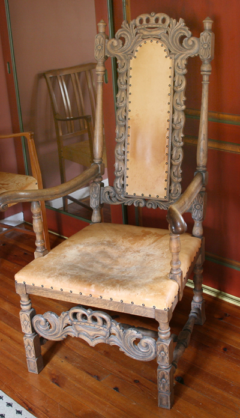
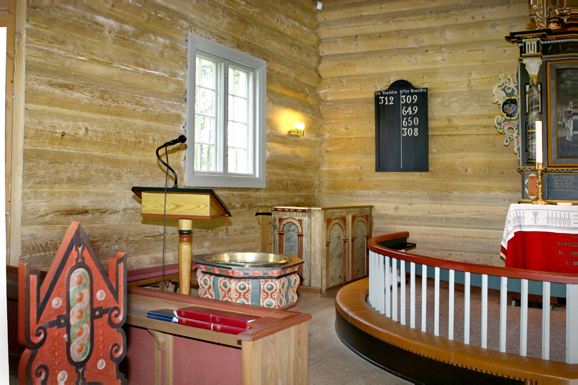
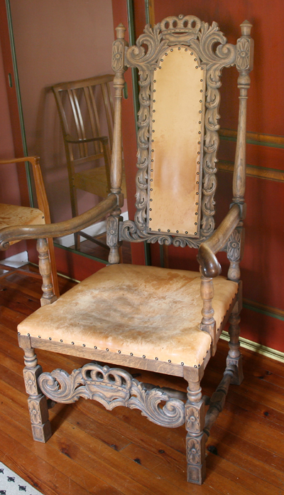
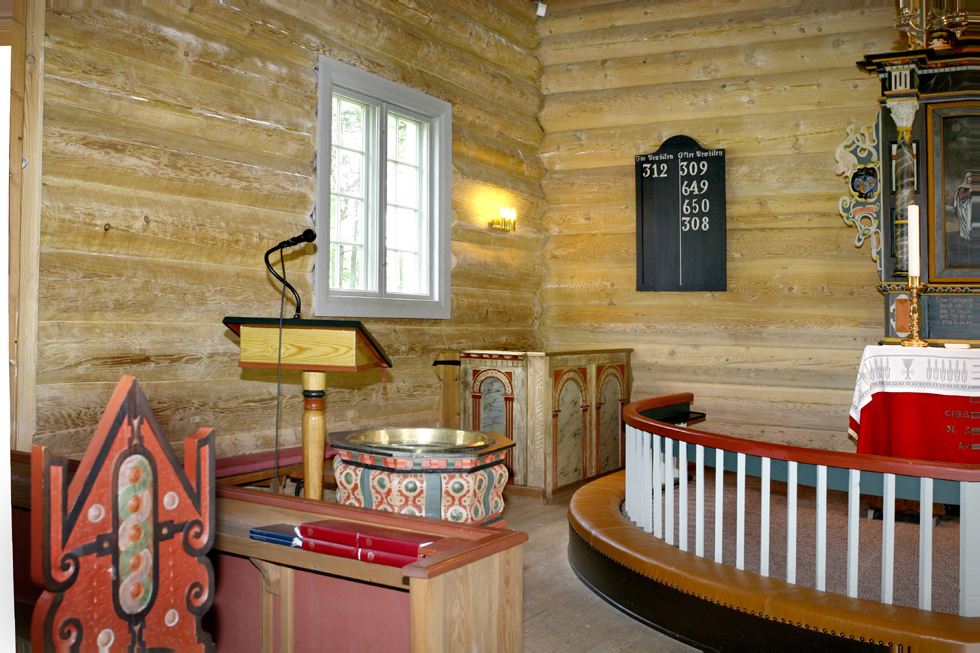
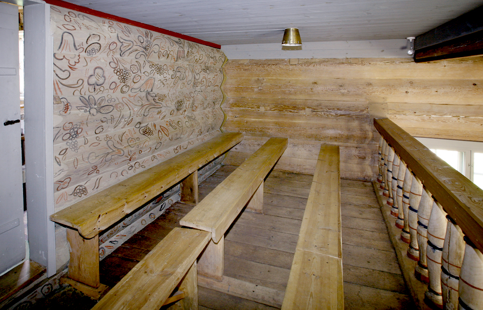
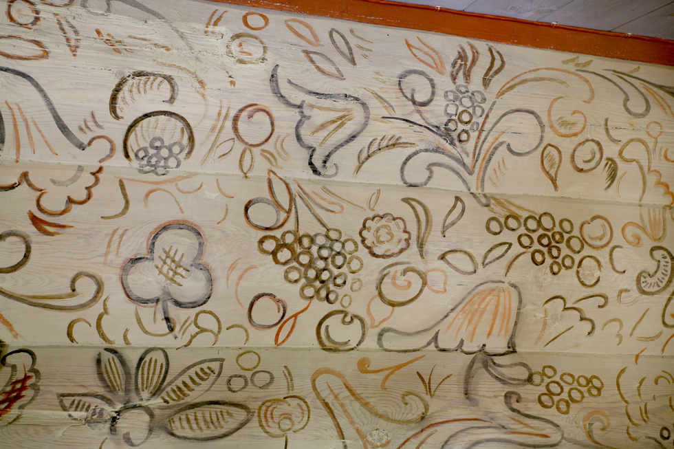
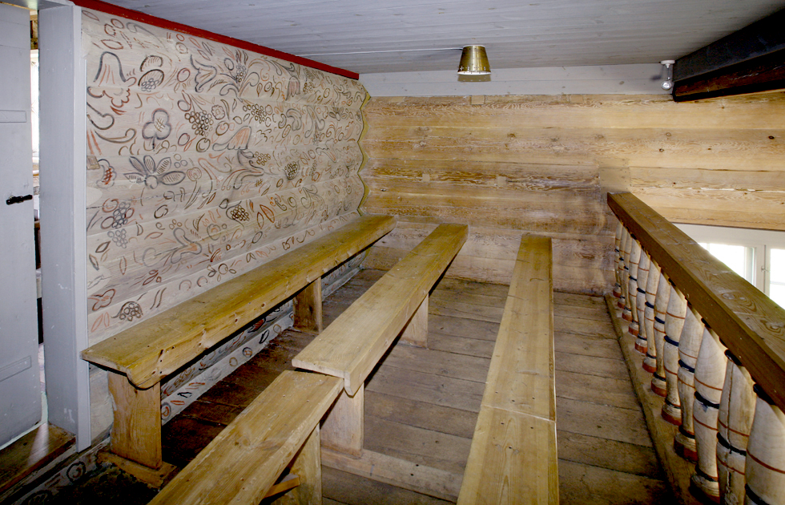
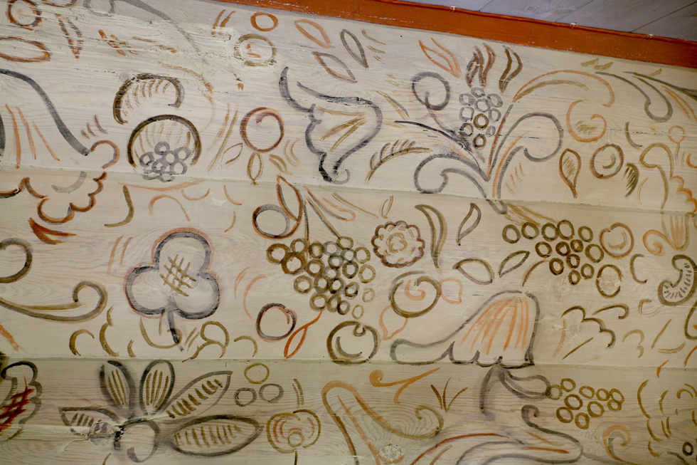
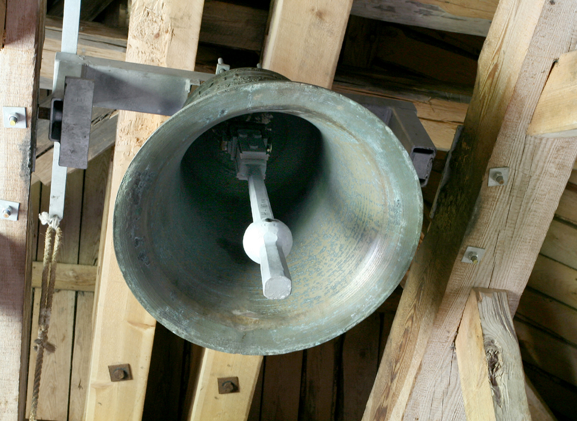

Harkmark kirke
Foto: Torvald Slettebø, Universitetet i Agder, Seniorsenteret
Harkmark kirke er fra 1613, og er kanskje Mandal kommunes klenodium nummer en på bygningssiden. Det er en langkirke bygd av furutømmer, og har ca 135 sitteplasser. Altertavle og prekestol er fra 1600-tallet.
Harkmark kirke er fredet etter Kulturminneloven, og forvaltes i henhold til dette. Kirken ble malt i 1999, og fremstår i dag i sin fulle prakt. Kirken fikk i 2005-06 nytt toalett og ny parkeringsplass. Gjenstående er oppgradering av området rundt fornminnet ved fylkesveien, hvor det er planen å etablere et grøntanlegg igjen.
Omlag 50 meter fra kirken står det gamle "Presthuset". Det tjente som sakristi inntil kirken fikk sitt nåværende sakristi i 1954.

Altertavle: Todelt. Nederste del skal være gave fra Oddernes, men folk ville beholde den gml. og satte de to sammen til en.
Antependium: Ca. 1660, gitt av mannskap på en hollandsk båt. Brodert: "Givet af Christen Poulsen, de skip St.Pitter, anno 1710".
Kirkesølv: Kalk, disk, oblateske og kanne, 1600-tallet.


 




 



Kirkeskip: 1707, gave fra Torkjel Harkmark. Kopi av det krigsskip han seilte på.
Harkmark kirke ble restaurert i 1972-75, og kirken fikk da nytt orgel i 1975.
Kirkeklokke med innskrift: "Dene klaake er bekosted af salig Tørres Christensøns me fecit cipria-nus crans enchusa. Anno 1731." er en er fra 1731 og er en gave fra Karen, enken etter Tørris Christensen Nedenes - "Kongen av Mandal".